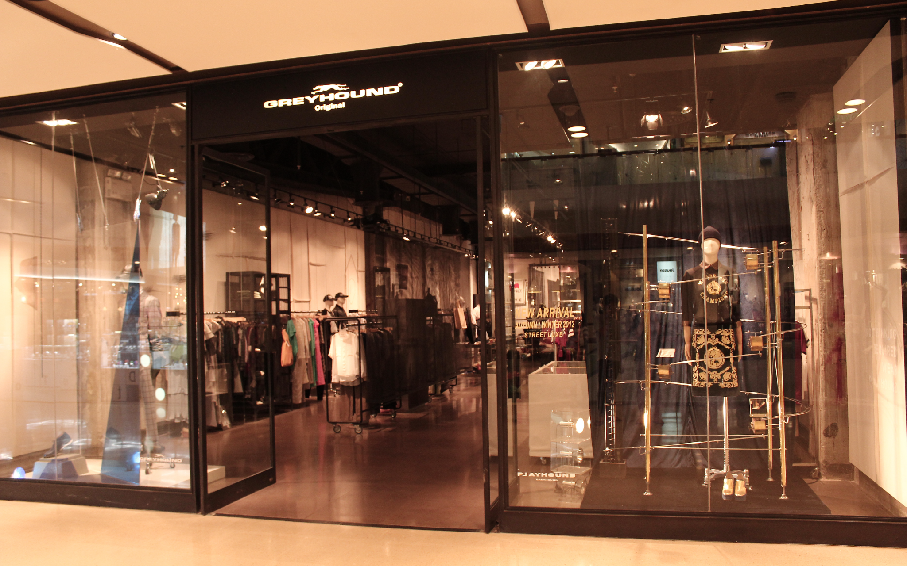
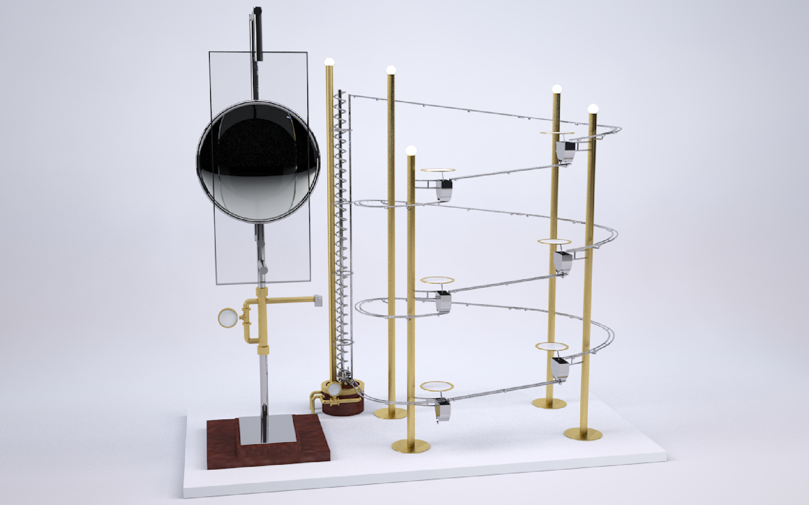
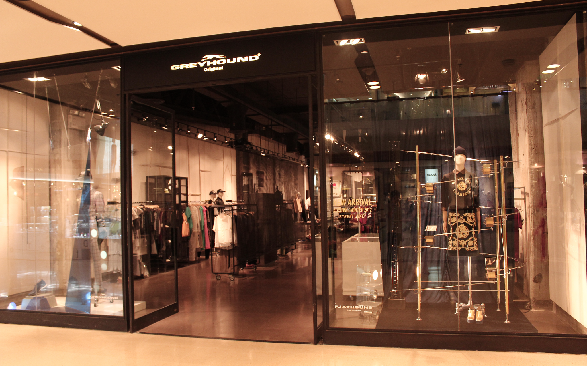
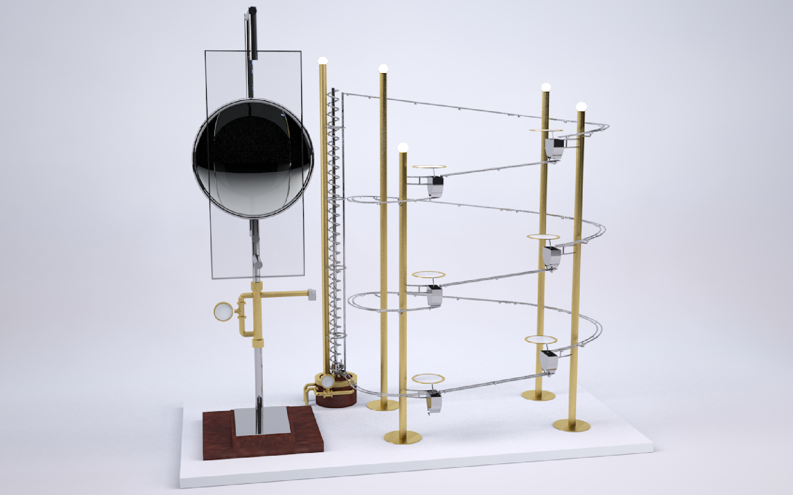

Playhound
Kinetic Window Display
Installation Design, Kinetic Design, 3D Design
With: 17+
Client: Playhound
A kinetic window display designed for Playhound. The installation was inspired by marble machines, utilizing an electrically powered screw conveyor to create a perpetual motion that is captivating and satisfying to watch.
 
Products Designs
Product Design, 3D Design
At: Chulalongkorn university
Product design projects form studio classes at Chulalongkorn university.
Arch CU Silpjum
Interactive Installation
Installation Design, Interactive Design, 3D Design
With: Stu77 Design Team
At: Chulalongkorn university
Silpjum is an annual event to welcome first-year students at Arch CU. I designed the installation art called Totem pole and created interactive visuals projected onto the building. It pioneered the use of interactive design in the event and was a model for the event in the following years.